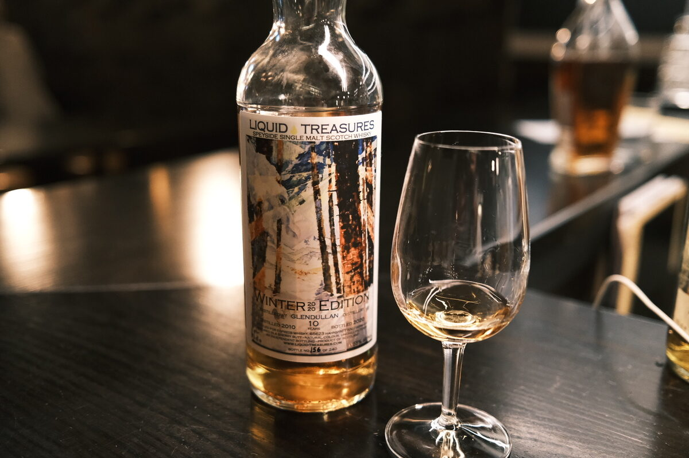

Glendullan 2010 Liquid Treasures 10 years 55% (sherry butt)
Alright, back to something a little more conventional and less controversial after those Juras.
Colour Amber.
Nose Dried fruits: raisins, sultanas. Milk chocolate. Marshmallows and strawberry jam. Royales! If you’re familiar. Quite malty too. Nutri-grain (we’re on a bit of a supermarket shop tonight). Vanilla sugar. With water, some floral notes.
Palate Malty. Dried fruits, orange juice acidity. Fruit mince tarts, Christmas pudding. Gluhwein. Cinnamon. Feeling the theme yet? Milk chocolate. With water, caramel and toffee.
Finish Fresh grape juice. Dried fruits. Milk chocolate. Malty. Quite warming, long. With water, oak and oak tannins.
Comments Very much a winter dram. Merry conventional Christmas. Drinks lighter than the ABV. Tasty stuff. 84/100.

Posted by Dominic on 14 Jun 2021